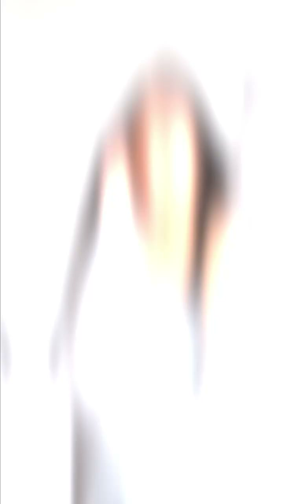
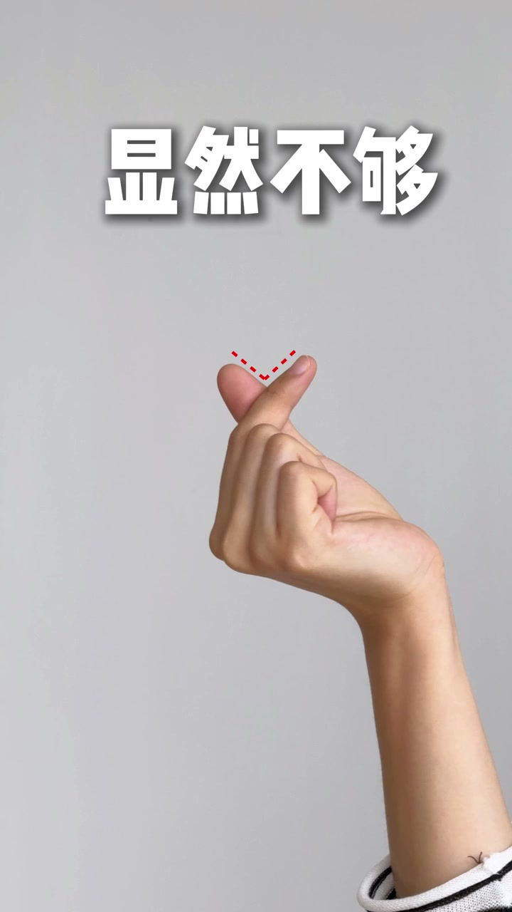

内容要点
这段视频围绕「💡拍照技巧｜一个超超超简单的出片方法！！！」展开，按时间介绍其中的关键环节。告诉你个超简单的拍照方法。
开场引入
告诉你个超简单的拍照方法。能光就框 能当则档。来 伸出你的右手。跟我做出这个姿势。这是一个非常经典的拍照手势。自带框架结构。却不具备遮挡宽度。而这也是一个非常经典的拍照手势。具备遮挡宽度。但框架结构显然不够

核心内容
至于框哪儿当哪儿。记住两个位置就好。眼睛 还有嘴巴。很简单的 我示范给你看。学会了。那我考考你。如果是他。你会怎么拍呢

总结
至于框哪儿当哪儿。